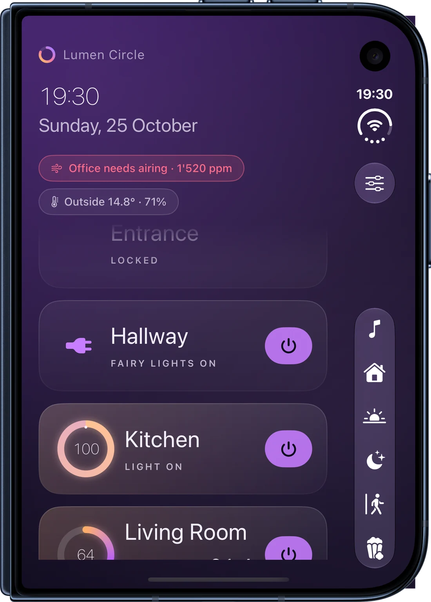
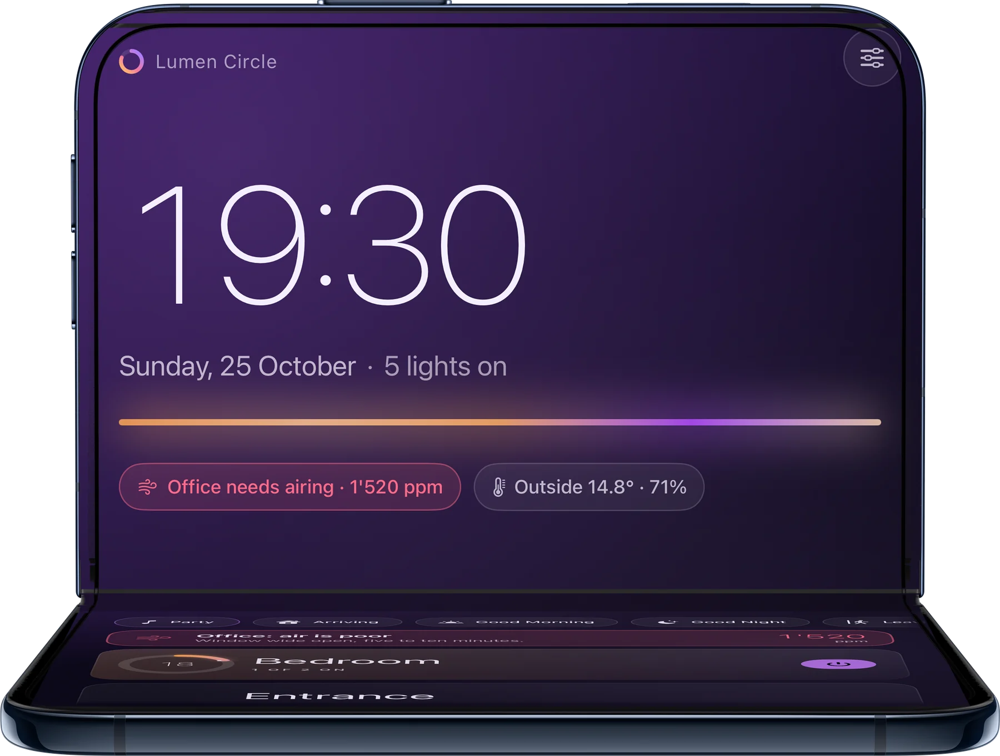
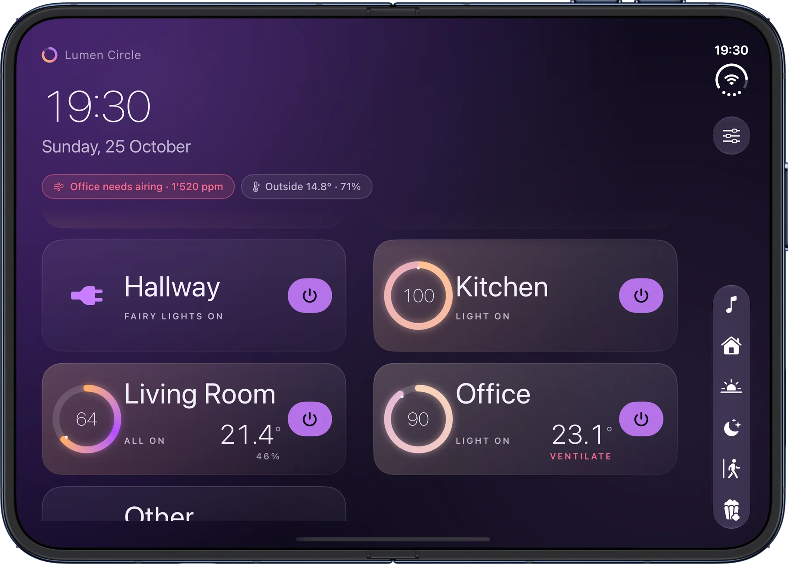
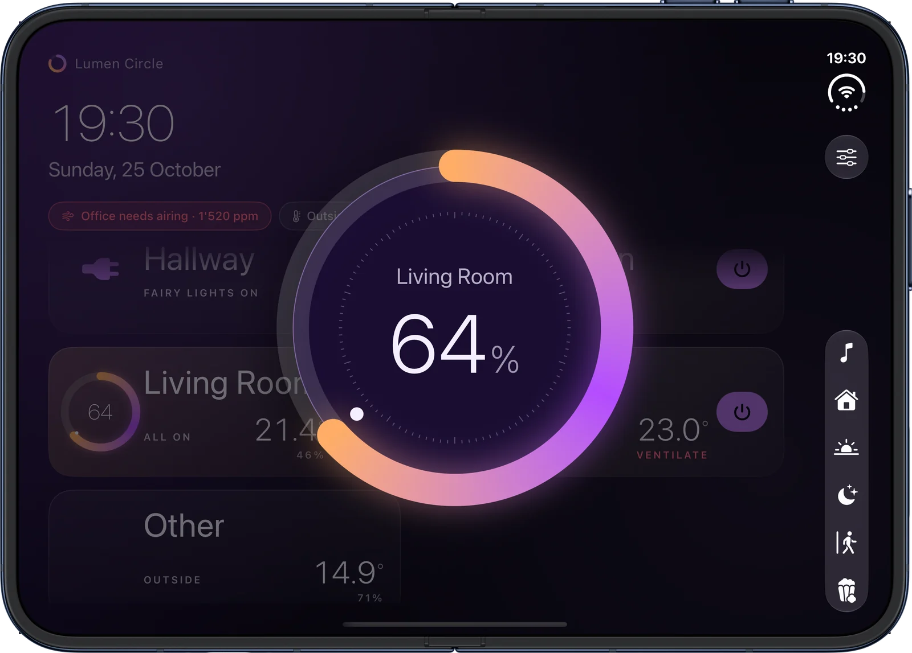
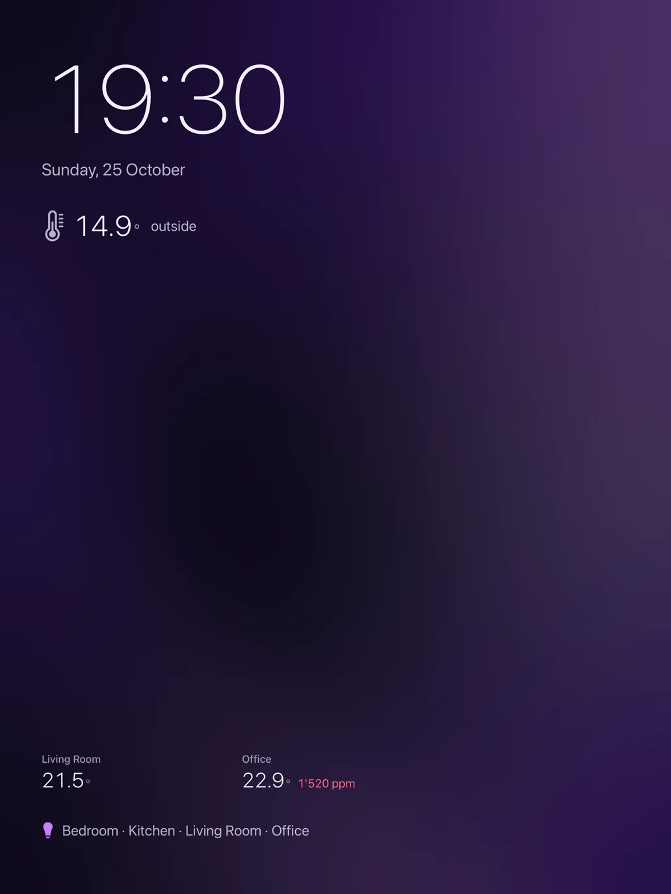
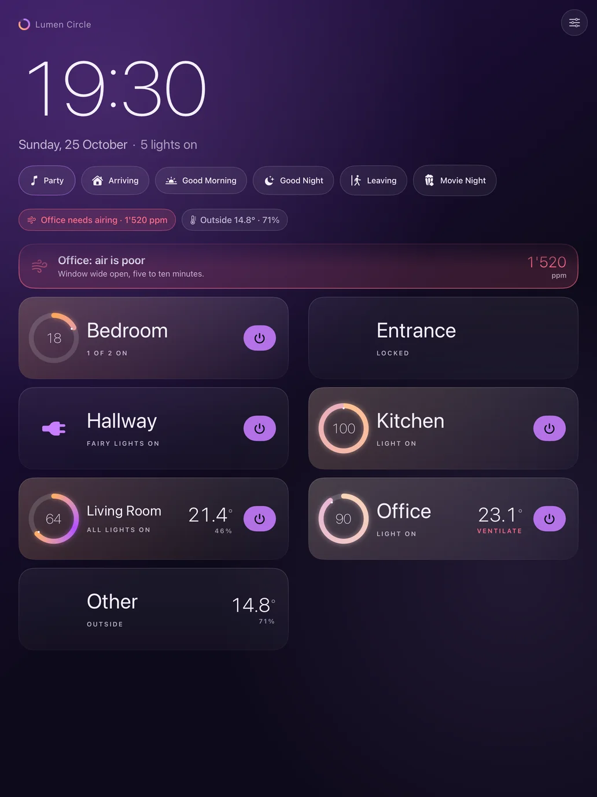
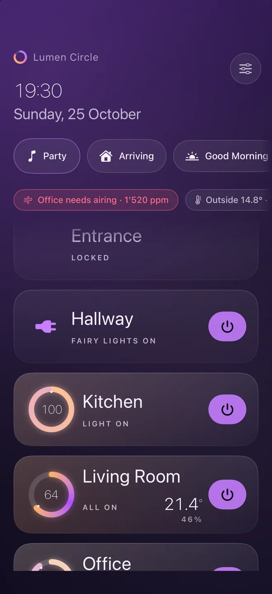
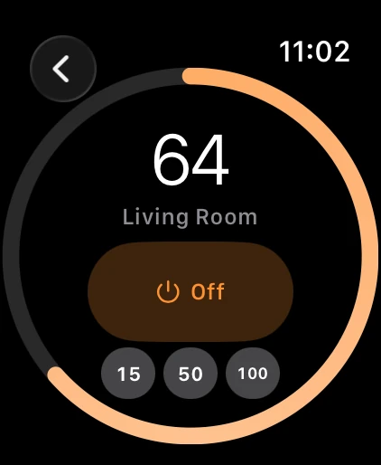
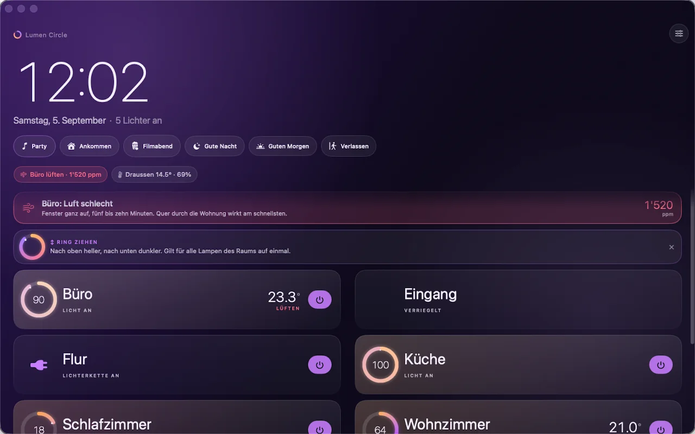
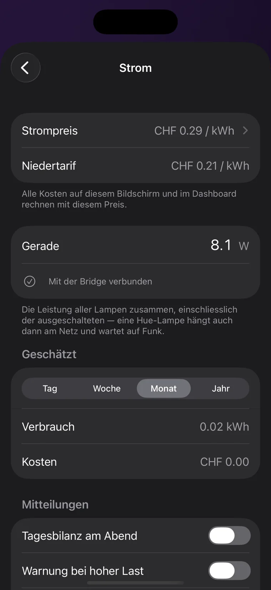

01 · Folded
The remote.
Rooms, not a device list, run with one thumb. The scenes sit in the bar on the right, right under your thumb — the time, network and settings just above.

For Apple Home and Philips Hue
An iPad on the wall that you can effortlessly read from two metres away. The iPhone as a remote control in your pocket, the Apple Watch as a precise dial on your wrist, and the Mac as a discreet window next to your work.
A yearly subscription the first four days are completely free

New for iPhone Duo
Folded, it is the remote. Unfolded, it is the panel. And as you fold, the room you are looking at stays exactly where it was.
01 · Folded
Rooms, not a device list, run with one thumb. The scenes sit in the bar on the right, right under your thumb — the time, network and settings just above.

02 · Unfolded
The rooms spread over two columns, the tiles stay the same size. Fold it again and the room you were just looking at sits at the same height — nothing jumps away.

03 · The ring
A tap opens the ring at full size, a drag sets every lamp in the room. Half open, it moves to the side you tapped — never into the fold.

04 · Half open
Stand the Duo up like a small laptop. On top, the time large and a band in the colours of the lamps that are on. Below, scenes and rooms, within reach.
Four Devices, One Home
iPad
Runs 24/7. It shows you rooms instead of countless individual devices, plus temperature, air quality, and the current power consumption of your lights. After a minute without interaction, the panel transforms into a calm display: you see the time, date, and the status of your rooms. If you have an outdoor sensor, the temperature appears right below the time. If a power meter is running, you see the current load. Nothing burns into the screen, and nothing glares at night.


iPhone
The same familiar view right in your hand. A quick tap opens the control ring, a swipe dims the light for the entire room. And if you leave while the lights are still on, a short notification reminds you.

Apple Watch
The ring fills the entire display, the Digital Crown becomes the dimmer. Every step clicks noticeably – one percent per click. No tedious aiming with your thumb, no finger covering half the screen. A glance at the watch face is enough to see if a light is still on anywhere.

Mac
The same app as a handy window on your desk or in the kitchen. It communicates directly with HomeKit on your Mac – you don’t need an iPhone lying next to it.

Lighting Control
How far the arc is closed instantly shows you how bright the room is. The ring glows in the exact colour of your lamps. Except at night: then the surface stays monochrome so no disruptive blue light wakes you.
Thirty lights in a list are a nightmare. Grouped as rooms, they become just six tidy lines. It simply says: “Lights on in the living room” instead of “Lamp 3 of 7 is at 72%.”

Power
Philips Hue lamps do not measure their own power consumption. Lumen Circle handles that for you – using real measurement curves from one percent up to full brightness. A half-dimmed lamp often draws only a third of the power. For unknown lamps (like Hue smart plugs), the app calculates using realistic estimates and labels them transparently.
A single button press on the Hue Bridge is all it takes for the complete setup. The precise measurement data comes from the open-source Powercalc project.
Also
Setup
Rooms, names, and scenes are imported directly from the Apple Home app. Lumen Circle communicates locally with HomeKit. No login, no external service in between.
And just like that, your power consumption is tracked. The app finds the bridge in your home network automatically.
iOS only asks for local network, notifications, or location access when you use the feature for the first time. If you decline, you only miss out on that single feature.
Requires an active setup in the Apple Home app. Accessories without HomeKit support can be reached via a Shortcut.
Price
For the first four days, you can test Lumen Circle completely free of charge with all features included. After that, the annual subscription begins, which applies to all your devices using the same Apple ID and can be easily transferred to a new device via “Restore Purchases”. Cancel anytime directly in your Apple ID settings.
What it costs is shown in the App Store — in your currency and for your country. The amount is not the same everywhere: eight Swiss francs buy a coffee here and half a day’s wage elsewhere. What counts is always the price the App Store shows you before you buy.
Privacy
Your Data Stays With You. There are no servers and we don’t track anything at all. The only things sent externally are the App Store purchase and your lamp’s model ID (e.g., “LCT015”) to the open Powercalc library to download the correct power profile. No name, no address, not even the number of your lamps is transmitted. Even the location for the departure notification stays saved locally on your device. The full version.
Questions
No. Lumen Circle shows and controls everything in your Apple Home app — lights, outlets, sensors. A Hue Bridge is only needed for the energy meter, because Hue lamps do not report their own consumption.
No. There is no sign-in and no server. The app talks directly to HomeKit and to your own Hue Bridge on your network.
iPhone, iPad, Apple Watch and Mac — one subscription covers all four. It requires iOS, iPadOS and macOS 26 or later. On iPhone Duo the app uses both displays.
From the model, on/off state, brightness and colour, using real measurement curves from one per cent up to full brightness. The figures come from the open Powercalc project. For lamps without a curve the app uses estimates and marks them as such.
A yearly subscription, with the first four days free. What it costs where you live is shown by the App Store — the price depends on the country.
Almost none. No account, no advertising, no analytics. The only things that go out are the App Store purchase and your lamp's model identifier, used to load the right power profile.
The first four days are completely free. On iPhone, iPhone Duo, iPad, Apple Watch and Mac.